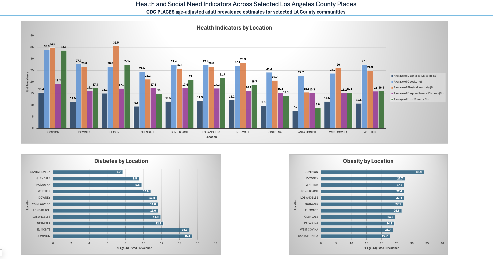

Dashboard Preview

Project Overview
This project explores selected adult health and social need indicators across selected Los Angeles County places using CDC PLACES data. I built it to practice turning a large public health dataset into a smaller, readable Excel dashboard with clear charts, documentation, and public health interpretation.
The project connects technical Excel skills with public health questions by comparing indicators related to diagnosed diabetes, physical inactivity, frequent mental distress, obesity, and food stamp receipt.
Research question: How do selected adult health and social need indicators vary across selected Los Angeles County places?
Excel Pivot Tables Pivot Charts Dashboard Design Public Health Data
Methods & Analytical Decisions
I filtered CDC PLACES data to selected Los Angeles County places and created a cleaned project dataset with one row per location. I used adult population age 18+ because the selected health indicators are adult measures.
I used age-adjusted prevalence estimates for the main health indicators to make comparisons across places more appropriate. I also included food stamp receipt as a social needs indicator, but avoided labeling it as food insecurity because program participation and food insecurity are related but not identical.
In Excel, I used tables, filters, pivot tables, pivot charts, and dashboard formatting to summarize patterns across locations.
Key Findings
Compton showed higher estimates across multiple selected indicators, including diagnosed diabetes, obesity, frequent mental distress, and food stamp receipt.
El Monte and Compton ranked higher for physical inactivity compared with several other selected places.
Santa Monica showed lower estimates across several indicators, including diabetes, obesity, physical inactivity, and food stamp receipt.
Food stamp receipt varied widely across places, highlighting differences in social and economic need among selected communities.
Population size alone did not explain indicator patterns, which is why prevalence estimates are useful for place-to-place comparison.
Spotlight Analysis
The spotlight comparisons show why both prevalence and population size are important in public health analysis. Larger cities may represent a greater total number of affected residents, but smaller cities can show higher proportional burden.
For example, Los Angeles had a much larger adult population than Compton, but Compton showed a higher diagnosed diabetes prevalence estimate. This suggests that Los Angeles may have a larger total number of adults affected because of its population size, while Compton may experience a greater proportional diabetes burden among adults.
The analysis also compared food stamp receipt and physical inactivity across selected places to show how health indicators can be interpreted alongside social and economic context.
Public Health Relevance & Limitations
This project reflects the kind of early-stage analysis that can help public health teams identify where further investigation may be useful. Comparing prevalence estimates across places can point to differences in chronic disease burden, health behaviors, and social need, especially when paired with careful local context.
The dashboard is exploratory and does not establish causation. CDC PLACES values are modeled estimates, not direct clinical counts. The selected locations do not represent every community in Los Angeles County, and the analysis does not account for all social, economic, environmental, or healthcare access differences between places.
Project Files
The PDF provides a polished view of the dashboard and project summary. The workbook is included to show the underlying project structure, including the cleaned data, pivot tables, dashboard design, and documentation notes.
Skills Demonstrated
Public Dataset Cleaning Indicator Selection Pivot Table Analysis Data Visualization Dashboard Design Public Health Interpretation Documentation of Limitations